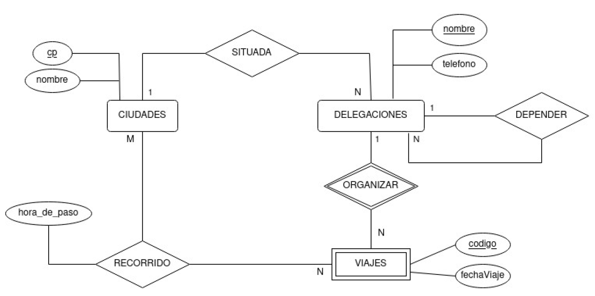

Los pasos a seguir para obtener un esquema conceptual del modelo Entidad-Relación son:
Una empresa quiere guardar información sobre la localidad en la que ha nacido cada uno de los empleados, teniendo en cuenta que:
Cada región, provincia y localidad tiene un código que la identifica y un nombre.
De los empleados debemos tener constancia de su DNI, nombre, teléfono y salario.
Se desea simular el comportamiento de una universidad cualquiera de acuerdo con la siguiente especificación:
Una empresa de calzado quiere guardar información de sus empleados teniendo en cuenta que:
Una empresa dedicada a la instalación de dormitorios juveniles a medida quiere tener una base de datos donde se reflejen las ventas y montajes. Para ello, se tiene en cuenta:
Dados los modelos E-R, realiza un modelo E-R totalmente equivalente en el que no haya atributos compuestos.
Dado el modelo E-R, realiza un modelo E-R totalmente equivalente en el que no haya atributos compuestos.
¿Qué atributos pueden ser identificadores o claves primarias?
Dado el modelo E-R, realiza un modelo E-R totalmente equivalente en el que no haya atributos multivaluados.
Dado el modelo E-R, realiza un modelo E-R totalmente equivalente en el que no haya atributos calculados. El precio total se calcula aplicando el IVA al resultado de aplicar el descuento al precio unitario
Dado el modelo E-R, realiza un modelo E-R totalmente equivalente en el que no haya atributos multivaluados. Ten en cuenta que no hay ninguna limitación respecto a la cantidad de temperaturas registradas por ciuidad.
Pasa al modelo lógico relacional el esquema entidad relación creado en el ejercicio 1.
Pasa al modelo lógico relacional el esquema entidad relación creado en el ejercicio 2.
Pasa al modelo lógico relacional el esquema entidad relación creado en el ejercicio 3.
Pasa al modelo lógico relacional el esquema entidad relación creado en el ejercicio 4.
Un club de fans de la famosa película StarTrek, ha decidido crear una página web donde se pueda consultar información referente a todas las películas y capítulos de la saga. El dominio startrekfans.com se redirigirá a un servidor web que consulte una base de datos con la siguiente información:
Se pide:
Realizar un diagrama entidad relación que modele el diseño de la base de datos. Puedes hacerlo en papel, con dia, con visio, o con cualquier otro software de diagramas. Una vez creado el diagrama, obtén el modelo lógico-relacional.
Modifica el modelo E/R de ejercicio 2 de manera que haya una generalización/especialización..
Diseña el modelo Entidad-Relación de los siguientes sistemas de información.
Una empresa naviera gestiona los viajes de los pasajeros que efectúan sus barcos.
Su base de datos debe ser capaz de gestionar los datos de los diversos viajes que se efectúan, identificándolos con un número de viaje se desea saber el destino, la fecha de salida y la fecha de vuelta. Los barcos que efectúan los viajes se conocen por su
matrícula, su nombre, el tonelaje, el número máximo de pasajeros, fecha de entrada en servicio y fecha prevista de retirada.
La tripulación de un barco es siempre fija (no depende de cada viaje). De cada marino se almacena su cargo (capitán, contramaestre, ...), fecha de alta y salario.
De un pasajero se conoce su dni, nombre y teléfono. Los pasajeros que viajan con niños menores (que no tienen DNI) deben registrarlos a su cargo.
Una empresa, propietaria de una red de almacenes de compra-venta de piezas de repuesto para automóviles, necesita organizar la siguiente información: código de la pieza, descripción de la misma, precio de venta, vehículo donde puede instalarse, código de proveedor, dirección, tlf y precio al que suministra la pieza, código de cada uno de los almacenes de la empresa, dirección, tlf y stock (cantidad de unidades de una pieza).
Se tendrá en cuenta que:
Un aficionado al cine quiere mantener una BD de las películas que tiene grabadas en DVD (nada pirata).
La información que se quiere registrar es la siguiente: Título en castellano, título original, género, año de estreno, duración de la película, nacionalidad, director, actores principales de la película, y para el director y actores, almacenaremos también el nombre, la fecha de nacimiento y muerte. Además, como las películas se graban en DVD guardaremos la marca y el modelo del DVD donde se hacen las grabaciones junto con la fecha de la grabación.
Este aficionado puede grabar más de una película en un DVD.
La federación valenciana de atletismo ha pensado establecer una base de datos que le permita un mejor seguimiento de las competiciones entre los diferentes clubes asociados y de los atletas que desarrollan su actividad deportiva como miembros de un club determinado.
Los atletas pertenecen a un club determinado, pero pueden cambiar de club a lo largo de su vida. Se quiere tener constancia de este hecho y se desea guardar los diferentes clubes por los que han pasado.
Los clubes tienen un código identificativo y un nombre, y se encuentran en una determinada ciudad.
De los atletas se tendrán los datos típicos: NIF, nombre y apellidos.
Además, es propósito de la federación mantener información actualizada respecto a las mejores marcas de los atletas en cada una de las actividades deportivas a las que se dedican (ejemplos de actividades deportivas son: carrera 100 m, carrera 200 m, maratón, salto de altura, salto con pértiga, decatlón, etc.).
También es de interés registrar las reuniones o competiciones atléticas que tienen lugar durante el año entre los clubes.
Un encuentro de este tipo involucra a dos o más clubes (hay encuentros triangulares, cuadrangulares, etc.). Se desea registrar qué clubes han participado en cada encuentro, así como dónde y cuándo se celebraron.
Cada reunión tendrá un código identificativo y una pequeña descripción (por ejemplo, para saber si la pista es al aire libre, cubierta, o si es una combinada, etc.).
La marca de cada atleta participante en un encuentro determinado también debería estar presente en la base de datos.
Se debe tener en cuenta que un atleta puede participar en un mismo encuentro compitiendo en más de una especialidad, en cuyo caso se desea tener datos sobre las marcas de cada una.
En una determinada granja se desea mantener la información correspondiente a la alimentación que se suministra a los animales que en ella se crían.
El control y seguimiento de la alimentación que se proporciona a cada animal tiene como objetivo el estudio y análisis de los resultados de la producción y el beneficio que se obtiene de los animales.
Cada uno de los animales tiene un código asociado que puede estar impreso en la oreja o en el lomo.
De un animal interesa almacenar la especie a la que pertenece, su utilidad, y la cantidad de productos que produce (litros de leche, número de huevos por día, etc.).
Cada animal sigue una dieta alimentaria basada en una serie de criterios determinados por los veterinarios.
Una dieta es el conjunto de alimentos que recibe un animal a lo largo del día.
Cada animal sigue una y solo una dieta a la vez.
La dieta seguida por cada uno de los animales de la granja puede ser modificada a lo largo de su vida, siendo de interés para los veterinarios el conocimiento de esta información.
Una dieta se establece para un animal y no para todos los animales de la misma especie.
Una misma dieta puede ser seguida al mismo tiempo por varios animales de la granja.
Cada dieta está compuesta por una serie de alimentos que son ingeridos por los animales en diferentes comidas a lo largo del día.
De una comida interesa saber el nombre que se le ha dado (desayuno, comida, cena, ...) y la hora en la que empieza y la hora a la que termina.
En cada comida, cada uno de los animales ingiere unas cantidades determinadas de uno o varios alimentos.
De los alimentos interesa guardar su nombre, su tipo (fruta, carne, ...), la unidad en la que se mide (litros, kg, ...), el precio de coste por unidad de medida y la cantidad de nutrientes que contiene cada uno de ellos.
Un alimento puede contener más de un nutriente.
De los nutrientes se almacenará su nombre, su unidad de medida y su estado.
Se quiere diseñar una base de datos para facilitar la gestión de una empresa dedicada al transporte internacional de mercancías y que opera en el ámbito europeo.
La empresa dispone de varias delegaciones repartidas por toda la geografía europea. Las delegaciones se identifican por un nombre, y se quiere almacenar también su teléfono y la ciudad donde está situada.
El personal de la empresa se puede separar en 2 grandes grupos:
De todo el personal de la empresa queremos saber su código de empleado, el nombre, el teléfono y el año de nacimiento.
Todos los empleados están asignados a una delegación determinada. Se quiere tener constancia histórica de este hecho, teniendo en cuenta que pueden cambiar de delegación (y volver a una delegación en la que habían trabajado anteriormente).
La actividad de la empresa consiste en efectuar los viajes pertinentes para transportar las mercancías según las peticiones de sus clientes. Todo los clientes se identifican por un código de cliente. También querremos saber su nombre y el teléfono de contacto.
La empresa dispone de muchos camiones identificados por un código. Se quiere saber la matrícula, marca y tara de los camiones.
Los viajes los organiza siempre una delegación y se identifican por un código de viaje, que es interno para cada delegación (se puede repetir en delegaciones diferentes). Para cada uno de los viajes interesa saber:
Pasa al modelo lógico-relacional el siguiente modelo entidad-relación
